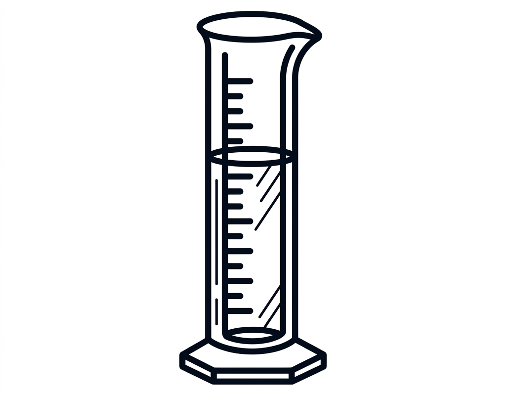
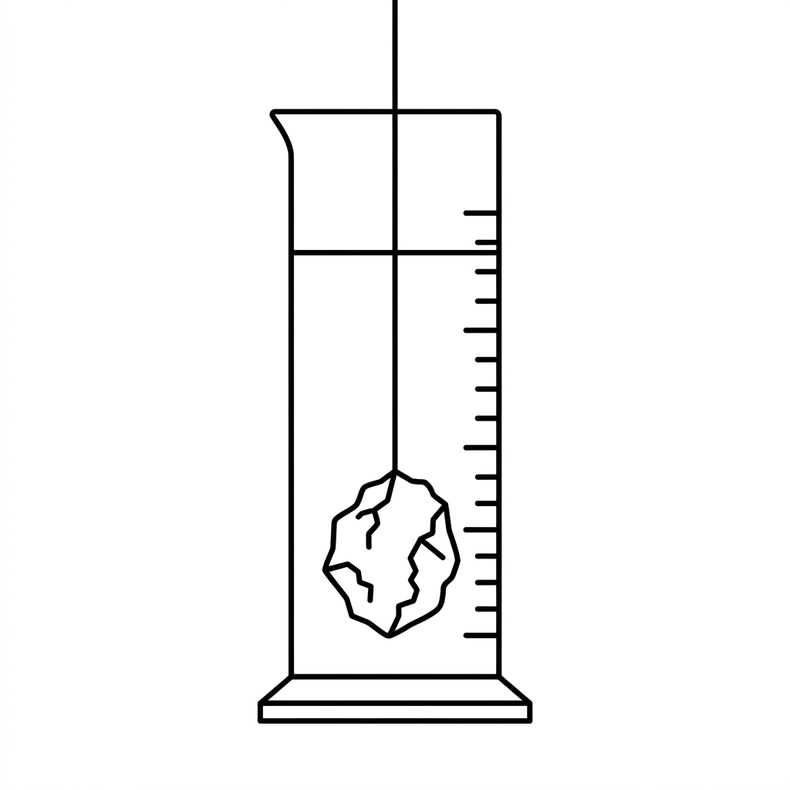
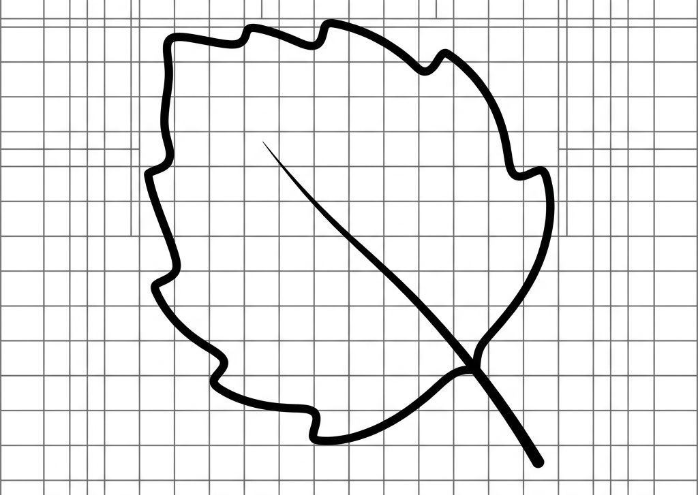
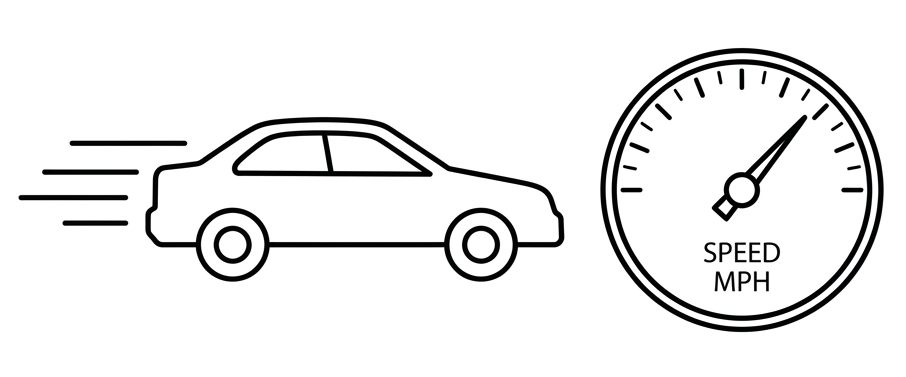

In our daily lives, we continuously measure basic physical quantities such as length, mass, time, and temperature. Building upon those fundamentals, this chapter introduces the precise measurement of Volume, Area, Density, and Speed.
Matter occupies space. Whether solid, liquid, or gas, everything around us has a specific size. The measure of this 3D space is an essential physical quantity.
Volume: The amount of space occupied by an object is called its volume.
Capacity: Often used for vessels or containers, it refers to the maximum volume of liquid (or matter) a container can hold.
The Standard International (S.I.) unit of volume is the cubic metre (m³). It represents the volume of a cube where each side is exactly 1 metre long. However, for smaller everyday measurements, we use smaller units.
Relationship between Units of Volume:

To measure the volume of liquids like water, milk, or oil, specific laboratory vessels are utilized:
Always place the cylinder on a flat, horizontal surface. Wait for the liquid to become stationary. Read the level by keeping your eye horizontally in line with the lower meniscus (the curved upper surface) of the liquid.

While regular shapes (cubes, spheres, cylinders) have mathematical formulas for volume, irregular shapes (like a stone) require the Displacement Method.
Area is the total surface occupied by a 2D object or a flat shape. The S.I. unit of area is the square metre (m²).
Bigger and Smaller Units of Area:

To find the area of an irregular 2D shape like a leaf, we use a graph paper (where 1 big square usually equals 1 cm²).
Have you ever wondered why 1 kg of iron is much smaller in size than 1 kg of cotton? Or why an iron cube is much heavier than a wooden cube of the exact same size? This difference is defined by a property called Density.
Density: The density of a substance is defined as the mass per unit volume of that substance.
Formula: Density (d) = Mass (M) / Volume (V)
Because Density = Mass / Volume, the units are derived directly from the units of mass and volume.
Conversion Factor:
1 g/cm³ = 1,000 kg/m³
Note: The density of water is maximum at 4°C, which is exactly 1 g/cm³ (or 1,000 kg/m³). In general, heating a substance causes it to expand, thereby decreasing its density.

An object is at rest if it does not change its position with respect to its surroundings. It is in motion if it continuously changes its position. To measure how fast or slow an object is moving, we calculate its Speed.